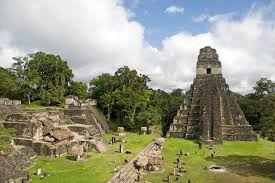
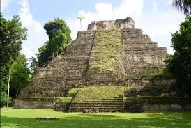

Yaxhá-Nakúm-Naranjo
El complejo Yaxhá-Nakúm-Naranjo es otra opción para quienes quieren explorar la historia maya con menos afluencia de visitantes. Se encuentra al este de Petén y cuenta con varias estructuras restauradas. Yaxhá destaca por su laguna cercana y por sus miradores, ideales para cerrar el recorrido con vistas amplias del área.

Cráter Azul
Se trata de un nacimiento de agua rodeado de vegetación, ubicado en Las Cruces. El color del agua cambia según la luz del día y el clima, lo que lo convierte en un punto popular para nadar y tomar fotografías.

Mirador El Recuerdo
El Mirador El Recuerdo es uno de los puntos menos conocidos, pero visitados por quienes buscan espacios recreativos. Se encuentra en el municipio de Poptún y es ideal para observar el atardecer. El acceso es sencillo y no requiere largas caminatas. Es un buen lugar para ir en familia, con niños y disfrutar una salida tranquila

Parque Natural Ixpanpajul
El Parque Natural Ixpanpajul está ubicado a pocos minutos de Flores. Ofrece senderos, puentes colgantes y actividades al aire libre. Es una opción común para familias y grupos que buscan pasar el día rodeados de bosque y animales. Puedes disfrutar varias actividades llenas de aventura y adrenalina y lo mejor es que también ofrecen hospedaje.

Jorges Rope Swing
orges Rope Swing es un columpio artesanal instalado sobre el lago Petén Itzá. Se ha vuelto popular en redes sociales por la experiencia que ofrece. El sitio es visitado principalmente por jóvenes y viajeros que buscan actividades diferentes y contacto directo con el agua.